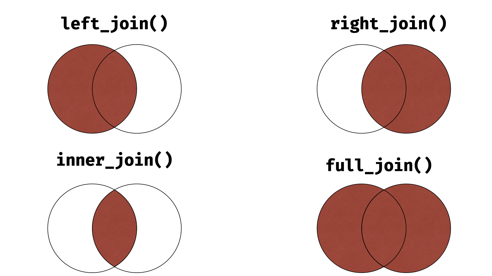

13 Spojování dataframů
V ideálním světě by všechna data potřebná pro naši analýzu byla připravena v jednom úhledném datasetu. Praxe je ovšem mnohem krutější a nutí nás si data čistit svépomocí. Jednou z častých nutností je spojovat větší počet dílčích datasetů dohromady, k čemuž nám poslouží sada funkcí *_join().
13.1 Spojovací funkce
Spojovat dva datasety lze více způsoby, všechny ale vyžadují klíč, tedy proměnou, která je přítomná v obou datframech a pomocí které budou propojeny jednotlivé řádky.

Funkcí pro spojení dvou dataframů nabízí Tidyverse více. První z nich, left_join(), připojí k prvnímu specifikovanému dataframu všechny řádky druhého dataframu se shodnou hodnotou klíče. Řádky, které se nachází pouze v druhém dataframu, ale ne v prvním, jsou ztraceny. Analogickou funkcí je poté right_join(), která zachová pouze řádky s hodnotami klíče, nacházejícím se v druhém dataframu. inner_join() je nejpřísnější z funkcí a při spojení dataframů zachová pouze řádky s hodnotami nacházejícími se v obou datasetech. Naopak funkce full_join() je nejliberálnější a zachová při spojení všechna data.
Pro ukázku spojovacích funkcí opustíme dataset countries a místo toho se podíváme do zvířecí říše, konkrétně na data z American Kennel Club. Jedná se o dva dasety, které jsou dostupné v rámci Tidytuesday. Importovat je lze přímo ze repozitáře projektu:
breed_traits <- read_csv('https://raw.githubusercontent.com/rfordatascience/tidytuesday/master/data/2022/2022-02-01/breed_traits.csv')
breed_ranks <- read_csv('https://raw.githubusercontent.com/rfordatascience/tidytuesday/master/data/2022/2022-02-01/breed_rank.csv')První z těchto datasetů obsahuje hodnocení o vlastnostech psích plemen jak byly hodnoceny členy klubu. Vlastností tu najdeme celou řadu, od délky kožichu po přátelskost nebo slintavost. Druhý dataset obsahuje informace o popularitě plemen za posledních zhruba 10 let, plus pár popisných odkazů:
names(breed_traits) [1] "Breed" "Affectionate With Family"
[3] "Good With Young Children" "Good With Other Dogs"
[5] "Shedding Level" "Coat Grooming Frequency"
[7] "Drooling Level" "Coat Type"
[9] "Coat Length" "Openness To Strangers"
[11] "Playfulness Level" "Watchdog/Protective Nature"
[13] "Adaptability Level" "Trainability Level"
[15] "Energy Level" "Barking Level"
[17] "Mental Stimulation Needs" names(breed_ranks) [1] "Breed" "2013 Rank" "2014 Rank" "2015 Rank" "2016 Rank" "2017 Rank"
[7] "2018 Rank" "2019 Rank" "2020 Rank" "links" "Image" Všimněme si, že oba datasety obsahují proměnnou Breed, tedy plemeno psa. To bude naším klíčem, tedy proměnou, pomocí které spojíme oba dataframy dohromady. Důvodem, proč nejsou oba datasety spojené už od začátku, je že ne všechna plemena obsažená v breed_traits se umístila v ročním hodnocení, a chybí tedy v breed_ranks. Při spojování dat je tedy na nás, jak se touto komplikací vypořádáme.
První možností je vzít dataframe breed_traits a přilepit k němu breed_ranks, pomocí funkce left_join(). Výsledkem bude dataframe, který obsahuje všechny informace z breed_traits a pokud se některé plemeno neumístilo v žebříčku z bree_ranks, bude mít v proměnných hodnocení chybějící hodnotu:
left_join(breed_traits, breed_ranks, by = "Breed")# A tibble: 10 × 27
Breed Affec…¹ Good …² Good …³ Shedd…⁴ Coat …⁵ Drool…⁶ Coat …⁷ Coat …⁸ Openn…⁹
<chr> <dbl> <dbl> <dbl> <dbl> <dbl> <dbl> <chr> <chr> <dbl>
1 Retr… 5 5 5 4 2 2 Double Short 5
2 Fren… 5 5 4 3 1 3 Smooth Short 5
3 Germ… 5 5 3 4 2 2 Double Medium 3
4 Retr… 5 5 5 4 2 2 Double Medium 5
5 Bull… 4 3 3 3 3 3 Smooth Short 4
6 Pood… 5 5 3 1 4 1 Curly Long 5
7 Beag… 3 5 5 3 2 1 Smooth Short 3
8 Rott… 5 3 3 3 1 3 Smooth Short 3
9 Poin… 5 5 4 3 2 2 Smooth Short 4
10 Dach… 5 3 4 2 2 2 Smooth Short 4
# … with 17 more variables: `Playfulness Level` <dbl>,
# `Watchdog/Protective Nature` <dbl>, `Adaptability Level` <dbl>,
# `Trainability Level` <dbl>, `Energy Level` <dbl>, `Barking Level` <dbl>,
# `Mental Stimulation Needs` <dbl>, `2013 Rank` <dbl>, `2014 Rank` <dbl>,
# `2015 Rank` <dbl>, `2016 Rank` <dbl>, `2017 Rank` <dbl>, `2018 Rank` <dbl>,
# `2019 Rank` <dbl>, `2020 Rank` <dbl>, links <chr>, Image <chr>, and
# abbreviated variable names ¹`Affectionate With Family`, …Všimněme si, že například němečtí ovčáci nebyli hodnoceni a u proměnných 2013 Rank až 2019 Rank tedy mají chybějící hodnotu. Naopak pro buldoky jsou k dispozici k dispozici všechna data.
Alternativou k left_join() je funkce right_join(). Ta provede velmi podobnou operaci, jako jsme viděli výše, výchozím dataframem zde ale bude breed_ranks.
right_join(breed_traits, breed_ranks, by = "Breed")# A tibble: 10 × 27
Breed Affec…¹ Good …² Good …³ Shedd…⁴ Coat …⁵ Drool…⁶ Coat …⁷ Coat …⁸ Openn…⁹
<chr> <dbl> <dbl> <dbl> <dbl> <dbl> <dbl> <chr> <chr> <dbl>
1 Bull… 4 3 3 3 3 3 Smooth Short 4
2 Pood… 5 5 3 1 4 1 Curly Long 5
3 Beag… 3 5 5 3 2 1 Smooth Short 3
4 Rott… 5 3 3 3 1 3 Smooth Short 3
5 Dach… 5 3 4 2 2 2 Smooth Short 4
6 Boxe… 4 5 3 2 2 3 Smooth Short 4
7 Pome… 5 3 3 2 3 1 Double Long 3
8 Hava… 5 5 5 2 3 1 Double Long 5
9 Brit… 3 4 4 3 3 1 Double Short 3
10 Pugs 5 5 4 4 2 1 Smooth Short 5
# … with 17 more variables: `Playfulness Level` <dbl>,
# `Watchdog/Protective Nature` <dbl>, `Adaptability Level` <dbl>,
# `Trainability Level` <dbl>, `Energy Level` <dbl>, `Barking Level` <dbl>,
# `Mental Stimulation Needs` <dbl>, `2013 Rank` <dbl>, `2014 Rank` <dbl>,
# `2015 Rank` <dbl>, `2016 Rank` <dbl>, `2017 Rank` <dbl>, `2018 Rank` <dbl>,
# `2019 Rank` <dbl>, `2020 Rank` <dbl>, links <chr>, Image <chr>, and
# abbreviated variable names ¹`Affectionate With Family`, …V tomto případě již plemena jako zlatý retrívr nebo německý ovčák ve výsledném dataframu nenajdeme vůbec, protože nejsou obsažena v dataframu breed_ranks.
Výsledek funkce left_join(breed_traits, breed_ranks) je ekvivalentní funkci right_join(breed_ranks, breed_traits).
Pro zachování pouze plemen, která jsou obsažena v obou dataframech, lze aplikovat funkci inner_join(). Výsledný dataframe bude mít mnohem méně řádků, než ty předchozí, pouze 49, protože většina plemen není v dataframu breed_ranks:
inner_join(breed_traits, breed_ranks, by = "Breed")Poslední verzí je permisivní outer_joint(), která spojí oba dataframy a zachová přitom všechny řádky:
full_join(breed_traits, breed_ranks, by = "Breed")13.2 Kterou spojovací funkci použít?
Každá z výše zmíněných funkcí se hodí pro jinou situaci. Která je ta pravá? Pokud je hlavním cílem naší práce analýza charakteristik jednotlivých plemen, bude pro nás nejužitečnější left_join(breed_traits, breed_ranks). Na druhou stranu, pokud by pro naši analýzu bylo stěžejní roční hodnocení, uplatili bychom spíše right_join(breed_traits, breed_ranks), protože plemena, který nebyla hodnocena, pro nás nejsou zajímavá. Pro analýzu vztahů mezi charakteristikami a hodnocením pro nás budou užitečná pouze plemena, pro která máme k dispozici všechny informace, a ty bychom získali pomocí inner_join(breed_traits, breed_ranks). Nakonec, pokud by naším cílem bylo jen datasety spojit, aniž bychom přišli o jakkýkoliv data, například pro jejich uskladnění, využili bychom full_join(breed_traits, breed_ranks).